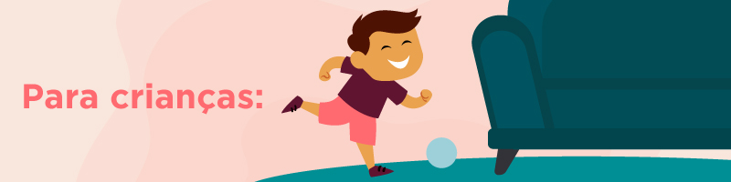
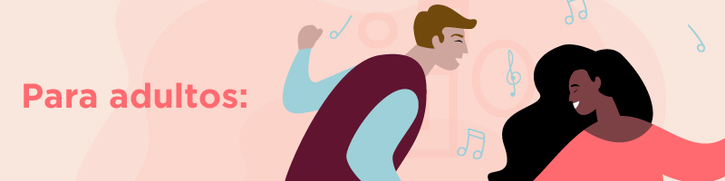
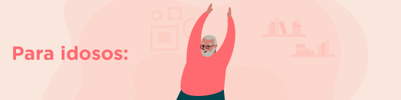
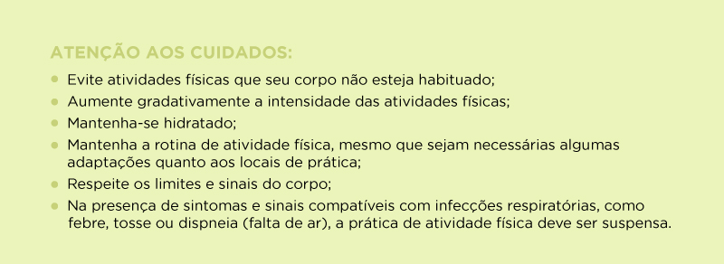

Diante da ameaça que o novo vírus oferece à saúde das pessoas, manter um comportamento sedentário pode ser ainda pior. Isso porque a prática de atividade física melhora o sistema imunológico e ainda contribui para a proteção e o combate às doenças crônicas, que podem agravar as consequências do Coronavírus.
Cabe um destaque para a obesidade. Essa doença crônica estava mais presente nos óbitos de jovens que nos de idosos, de acordo com o boletim do Ministério da Saúde sobre a disseminação do COVID-19 no Brasil divulgado no início de abril. Nesse caso, a atividade física pode colaborar de maneira efetiva para a redução do acúmulo de gordura corporal e a melhora da saúde de forma global.
Manter a rotina da prática regular de atividade física pode oferecer também benefícios psicológicos, como promover a sensação de bem-estar. Esse é um fator importante a ser observado, uma vez que a nova rotina proposta pela pandemia pode ser um fator estressante e gatilho para a ansiedade.
Nesse sentido, manter a prática de atividade física ajudará no retorno das atividades de vida diária, após o período crítico de disseminação do novo Coronavírus. E as vantagens valem para crianças, adultos e idosos. Então, empurre os móveis da sala e aproveite o espaço para se movimentar!
Aproveite também para convidar as pessoas que moram com você para sair do sofá. Assim, praticar atividade física pode se tornar um momento familiar de entretenimento e socialização. Dessa forma, a Coordenação-Geral de Promoção de Atividade Física e Ações Intersetoriais, do Ministério da Saúde, orienta que para cada faixa etária existe um tipo de prática adequada.
De acordo com a Coordenação do Ministério, as atividades físicas podem ter qualquer intensidade e devem ser distribuídas ao longo do dia. A música é um bom incentivo para esses movimentos, assim como os momentos de brincadeira com a família. Exemplo: rastejar, engatinhar, manipular objetos e texturas, correr ou andar.
As atividades físicas já podem ter maior intensidade e serem estimuladas por meio de histórias infantis, músicas ou brincadeiras cantadas, que incentivem as crianças a usarem a criatividade e a imaginação. Por exemplo: subir e atravessar objetos, dançar, pular corda, brincar de esconde-esconde.
As atividades físicas ganham ainda mais intensidade e podem ser realizadas por meio de jogos, brincadeiras e danças. Vale também brincar de esconde-esconde, de mímica, criar coreografias, pular corda, elástico e amarelinha. Videogames que estimulam os movimentos corporais também são bem-vindos.
Para todas as faixas etárias das crianças, é essencial que o tempo em frente às telas (tablets, celulares e televisão) seja reduzido ao máximo possível e seja substituído por atividades físicas, como as citadas acima.
São recomendadas atividades físicas de intensidade moderada a vigorosa, que podem ser realizadas no tempo livre ou durante os afazeres domésticos. Vale dançar, pular corda, subir escadas. Assim como para as crianças, os videogames que estimulam movimentos corporais também podem ser opções divertidas para os adultos.
Para quem está em home office durante a pandemia, é importante evitar longos períodos sentado. Levante-se de tempos em tempos para se movimentar, seja para buscar água, ir ao banheiro ou até mesmo dar uma volta pela casa.
Para os iniciantes em qualquer atividade física, é recomendável começar pelas mais leves. Os exercícios de alongamento e relaxamento podem ser realizados em casa, sem a necessidade de muito espaço, como no chão ou em pé.
Da mesma forma, podem ser feitos os exercícios de fortalecimento que envolvem grandes grupos musculares, como se sentar e se levantar de uma cadeira ou agachar para levantar objetos com pouco peso (1 a 2 kg). É importante sempre respeitar os limites do próprio corpo.
Para adultos que já têm contato com a atividade física, é hora de adaptar os exercícios em casa ou diversificar as atividades. Além disso, mantenha sempre o corpo hidratado e beba água várias vezes ao dia.
Eles podem realizar alongamentos simples e exercícios de fortalecimento muscular. Alguns exemplos que podem ser feitos dentro de casa são: levantar-se e sentar-se na cadeira algumas vezes seguidas, subir escadas, agachar para pegar objetos ou carregar sacolas com pouco peso. Sempre respeitando os limites do próprio corpo.
Por ser a faixa etária com maior risco, os idosos necessitam de mais atenção e devem ficar em casa o máximo de tempo possível. Manter o corpo ativo ajudará a ter disposição para fazer as atividades rotineiras após o período de isolamento.
Mesmo que os sintomas sejam leves, suspenda imediatamente a prática das atividades físicas, é o que orienta Paula Sandreschi, da Coordenação-Geral de Promoção da Atividade Física e Ações Intersetoriais do Ministério da Saúde. Retome apenas após realizar possíveis exames e tratamentos ou quando não tiver mais sintomas. Para saber mais sobre indícios, tratamento, unidades de saúde próximas a sua casa e conferir notícias oficiais com foco no COVID-19, baixe gratuitamente o aplicativo Coronavírus – SUS.
